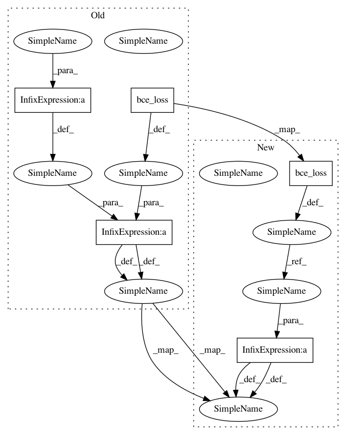

2ee8ac1546400645908b61ef015cdf5d71aa34cc,models.py,YOLOLayer,forward,#YOLOLayer#,131
Before Change
// Get conf mask where gt and where there is no gt
conf_mask_true = mask
conf_mask_false = conf_mask - mask
// Mask outputs to ignore non-existing objects
loss_x = self.mse_loss(x[mask], tx[mask])
loss_y = self.mse_loss(y[mask], ty[mask])
loss_w = self.mse_loss(w[mask], tw[mask])
loss_h = self.mse_loss(h[mask], th[mask])
loss_conf = self.bce_loss(pred_conf[conf_mask_false], tconf[conf_mask_false]) + self.bce_loss(
pred_conf[conf_mask_true], tconf[conf_mask_true]
)
loss_cls = self.ce_loss(pred_cls[mask], tcls[mask].argmax(1))
loss = loss_x + loss_y + loss_w + loss_h + loss_conf + loss_cls
cls_acc = (pred_cls[mask].argmax(1) == tcls[mask].argmax(1)).float().mean().item()
After Change
loss_w = self.mse_loss(w[obj_mask], tw[obj_mask])
loss_h = self.mse_loss(h[obj_mask], th[obj_mask])
loss_conf_obj = self.bce_loss(pred_conf[obj_mask], tconf[obj_mask])
loss_conf_noobj = self.bce_loss(pred_conf[noobj_mask], tconf[noobj_mask])
loss_conf = loss_conf_obj + loss_conf_noobj
loss_cls = self.ce_loss(pred_cls[obj_mask], tcls[obj_mask].argmax(1))
loss = loss_x + loss_y + loss_w + loss_h + loss_conf + loss_cls
cls_acc = (pred_cls[obj_mask].argmax(1) == tcls[obj_mask].argmax(1)).float().mean().item()
In pattern: SUPERPATTERN
Frequency: 3
Non-data size: 5
Instances
Project Name: eriklindernoren/PyTorch-YOLOv3
Commit Name: 2ee8ac1546400645908b61ef015cdf5d71aa34cc
Time: 2019-04-22
Author: eriklindernoren@live.se
File Name: models.py
Class Name: YOLOLayer
Method Name: forward
Project Name: eriklindernoren/PyTorch-YOLOv3
Commit Name: 1ea81699d516c6847542b04c8afaf5eb9f6a0954
Time: 2018-10-01
Author: eriklindernoren@gmail.com
File Name: models.py
Class Name: YOLOLayer
Method Name: forward
Project Name: eriklindernoren/PyTorch-YOLOv3
Commit Name: 2ee8ac1546400645908b61ef015cdf5d71aa34cc
Time: 2019-04-22
Author: eriklindernoren@live.se
File Name: models.py
Class Name: YOLOLayer
Method Name: forward